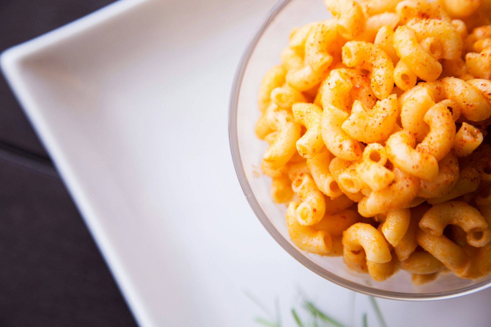

Lovely mac-n-cheese, (your outcome will not look like this) Photo by Hermes Rivera on Unsplash
Decription
Mac-n-cheese is a pasta based dish with a yummy cheesy sauce!
Ingredients
50g baguette - optional
2 tbsp butter (plus tbsp metled butter)
350g of spiral or other pasta
1 garlic clove
1 tsp English mustard/powder equivlient
500ml whole milk
250g mature cheese
50g parmesan
Steps
Heat the oven to 200C/180C fan/gas 6. Spread the baguette chunks over a baking sheet, drizzle with the melted butter and season. Bake for 6 mins until crisp, then set aside.
Boil the pasta for 2 mins less than stated on the pack, then drain.
Meanwhile, melt the butter in a saucepan. Add the garlic and English mustard powder, cook for 1 min, then stir in the plain flour.
Cook for 1 min more, then gradually whisk in the milk until you have a lump-free sauce.
Simmer for 5 mins, whisking all the time until thickened. Take off the heat, then stir in the cheddar and half the parmesan.
Stir the pasta and some seasoning into the cheesy sauce. Tip into a large ovenproof dish, or four individual dishes.
Scatter over the bread and the remaining parmesan, then bake for 20 mins until crisp and golden. Can be frozen before baking – defrost thoroughly before cooking.